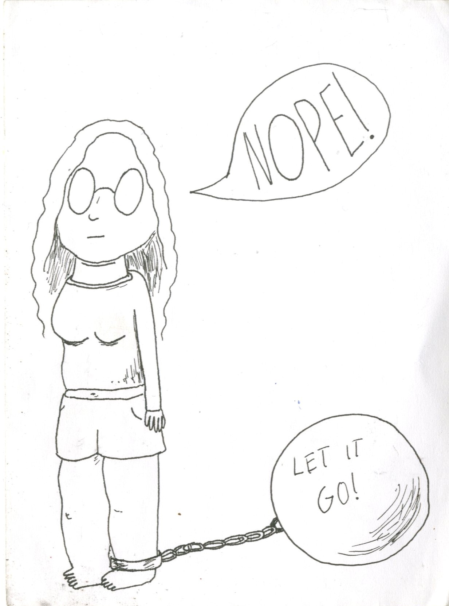
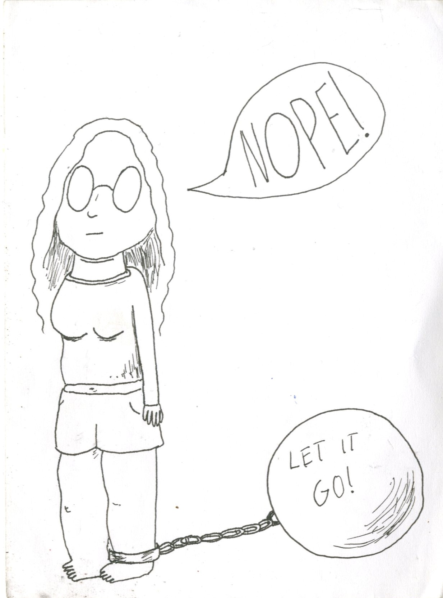

Jeg er lige fyldt 24.
Jeg startede på IT-grundforløbet i 2020 og bestemte mig for at fortsætte med programmering, da jeg fandt det meget spænende. Jeg er meget ny til programmering og har ikke udviklet synderligt meget.
Til gengæld har jeg tegnet en del. Jeg tog en 3-årig HF, som specialiserede sig i tegning og animation.
Jeg går meget op i film og spiller alt for mange videospil, hvilket ofte kan resultere i lange nætter og for lidt søvn...
Istedet for programmering, har jeg valgt
at vise nogle af mine tegninger.
Jeg har tegnet langt mere, end jeg har programmeret.
Selvportræt, 2018
Portræt af Valdemar Fomsgaard
 

Hurra Hurra Hurra!